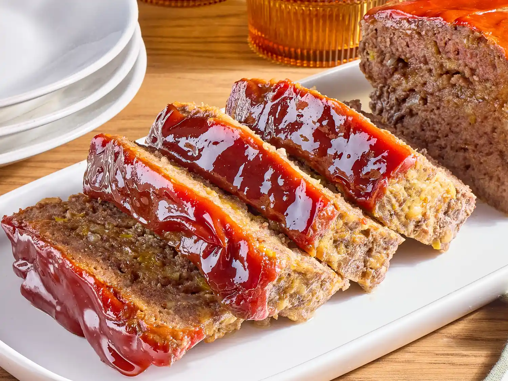

Home
Mom's Meatloaf Recipe

A classic American comfort food that's perfect for family dinners.
Ingredients
- 1 lb ground beef
- 1 cup breadcrumbs
- 1 egg
- 1/2 cup milk
- 1/4 cup chopped onion
- 2 cloves garlic, minced
- 1 tsp salt
- 1/2 tsp black pepper
- 1/2 cup ketchup
Steps
- Preheat the oven to 350°F (175°C).
- In a large bowl, combine the ground beef, breadcrumbs, egg, milk, onion, garlic, salt, and pepper.
- Mix well and form into a loaf shape on a greased baking sheet.
- Bake for 60 minutes or until the internal temperature reaches 160°F (71°C).